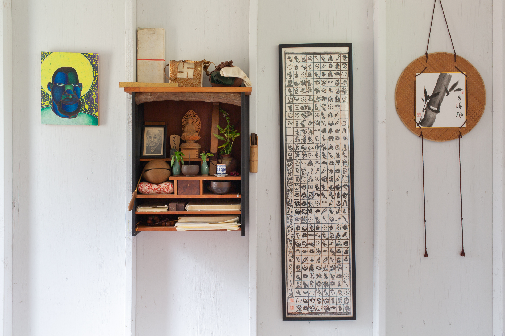
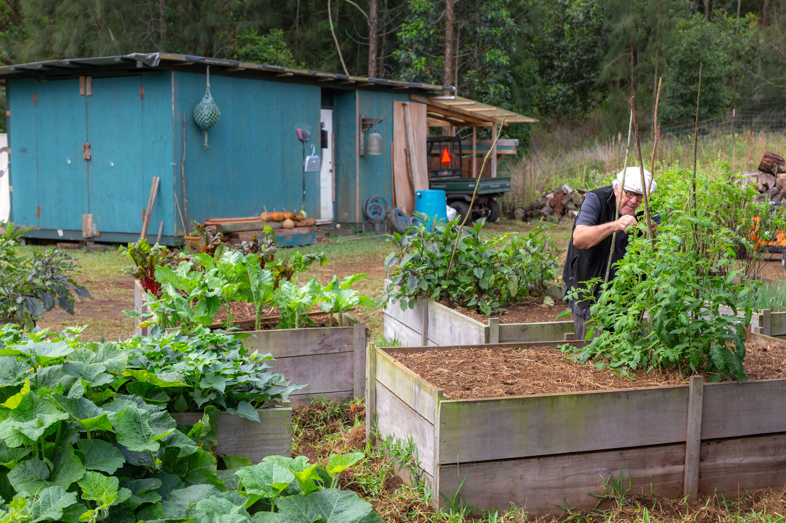

“To study the self is to forget the self. To forget the self is to be actualized by myriad things.” 
Mission Statement
Chop and Carry Farm is an emerging Soto Zen practice center guided by the teachings of Dōgen Zenji and Suzuki Roshi, with its practice structure modeled on the early days of Tassajara. This center is not for priest training. It is a place to practice ethical living based on Dōgen Zenji’s Hachi Dainin Gaku and his teachings of the Shōbōgenzō, especially the Genjōkōan.
The community is intended to remain small and in harmony with what the island can support. Individual dwellings follow traditional Buddhist ten-cubit proportions. Daily life is built around minimizing dependence on fossil fuels, eating and creating locally, and working within the limits of the island and what it can sustain.
This project is a shared effort to live responsibly with one another and with the land. Anyone who resonates with this intention is welcome to help shape what is coming into form.
If this work interests you, please reach out to us at info@chopandcarry.com.
Schedule
Five days per week
(Weekends follow a modified schedule)
Communal Work
Communal work is central to Chop & Carry Farm. Participants work together to produce food and materials that support both the immediate community and the wider region, without reliance on mainland imports.
Current work includes raising chickens and fish, supported by field crops that feed both animals and people.
Personal Projects
Each participant commits to an individual project during designated practice time. Projects should be useful to the broader community and not depend on mainland imports.
Examples include food production, craft, writing, and other practical or creative work.
We ask visitors to commit to a minimum stay of two weeks and a maximum of three months.
There is no fee to stay at Chop and Carry Farm. We ask only that participants cover their transportation and any personal necessities (for example, toothpaste).
Biography
Paul Zengyu Discoe began studying with Shunryu Suzuki Roshi in 1967 and was ordained by him in 1970 alongside Reb Anderson. Suzuki Roshi then sent him to Japan to study traditional temple building. While there, he lived in rural villages among farmers, artisans, and priests, away from Japan’s growing industrial centers.
The experience introduced him to the simple, self-sufficient economy of pre-war rural Japan. It left a lasting impression and remains one of the influences behind Chop and Carry Farm.
After returning to the United States, Paul devoted his craft to supporting the Zen community. His work includes Greens Restaurant in San Francisco, the Abbot’s House at Green Gulch, Founders Hall and the new Zendo at Tassajara, and other projects. In 1990, after receiving transmission, he founded Joinery Structures, designing and building spaces for both Buddhist and secular use.
His reflections on decades of practice appear in Zen Architecture, a book that looks at building as an expression of the spirit of the Genjōkōan.